The Applications Tab
Topics
Key Performance Indicators (KPIs)
Key Performance Indicators (KPIs)
Key Performance Indicators (KPIs)
The Applications tab is the main interface for finding your applications and analyzing their performance. Unravel supports both ad-hoc applications and repeated running workflows or data pipelines. Ad-hoc applications are generally Hive queries, MR jobs, Spark applications, Impala queries, and so on; these are generated by end user tools (such as BI tools like Tableau, Microstrategy etc.) or submitted via CLI. Repeated running workflows or data pipelines are created using cron or schedulers like Oozie, AirFlow or ETL tools like Informatica, Pentaho and others.
 The performance and reliability of an application depends on several factors such as quality of the code, types of joins used, configuration settings, data size, scheduler settings, contention with other applications, and so on. Therefore, it takes significant expertise and effort to get to the root cause of problems of an application. Unravel provides insights into an application. These insights are called events. For more information about events, see Key Performance Indicators within the appropriate application "manager" below.
The performance and reliability of an application depends on several factors such as quality of the code, types of joins used, configuration settings, data size, scheduler settings, contention with other applications, and so on. Therefore, it takes significant expertise and effort to get to the root cause of problems of an application. Unravel provides insights into an application. These insights are called events. For more information about events, see Key Performance Indicators within the appropriate application "manager" below.
Finding Applications
You can search on various dimensions (app type, status, queue, user, cluster, duration, and so on) to find your application(s). Use the date pull-down menu to limit results to a specific time range. Search results are ordered by the most recent start time. To reorder the results by another property, click the appropriate header in the results table.
 |
You can also use the global search bar in the top banner to search by full job ID, user name, table name and cluster ID.

Search results list individual jobs, and job IDs. If the job is part of a Hive query, Pig script, and/or a workflow, then a link to that Hive query/Pig script/workflow page appears on the same line. To go to the job-specific page, click the job ID. To go to the application-specific manager for a query/script/job/workflow, click the icon under its GoTo column as highlighted in the image below.
 |
Application-Specific Managers
Spark Application Manager
The Spark Application Manager provides a detailed view into the behavior of Spark applications. You can use this view to:
Resolve inefficiencies, bottlenecks, and reasons for failure within applications
Optimize resource allocation for Spark executors
Detect and fix poor partitioning
Detect and fix inefficient and failed Spark apps
Tune JVM settings for Spark drivers/executors
| 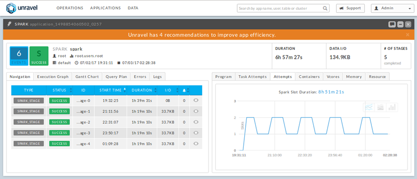 |
Key Performance Indicators (KPIs)
The key performance indicators (KPIs) at the top provide the most important information about the Spark application. The Spark Application Manager displays the following KPIs:
Events: The number of Unravel recommendations or insights for this query. To see details, click the Events icon as highlighted in the image below.

The performance and reliability of your Spark application depends on several factors such as quality of the code, types of joins used, configuration settings, data size, scheduler settings, contention with other applications, and so on. Therefore, it takes significant expertise and effort to get to the root cause of problems in a Spark application. Unravel Events are designed to save you time and effort by automatically providing insights into the application. These events capture reasons for failed and killed queries as well as provide recommendations to improve application performance.

Duration: Total time taken by the application to complete execution
Data I/O: Total data read and written by the application
Number of Stages: The number of stages that make up the Spark application and their status
Sub-Tabs
The Spark Application Manager contains multiple sub-tabs, each of which is described below.
Navigation: A table of the stages associated with this application. To see details about a stage, click its row in the table. This displays the Spark Stage view, as illustrated in the image below.
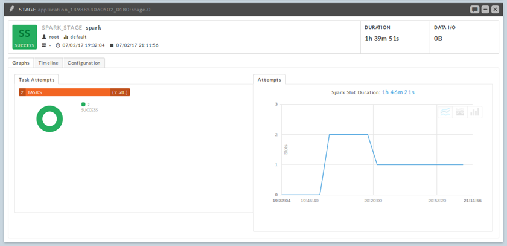 The Spark Stage view provides detailed information about each Spark stage. It includes:
Graphs: General task/slot statistics of the stage
Timeline: Timeline and histogram of task attempts, duration, and bytes shuffled/spilled.
This information is very useful for identifying data skew.
Configuration: Key/value pairs of configuration settings for the application

Click here to see sample screenshots...
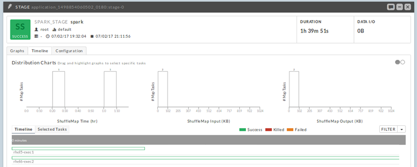 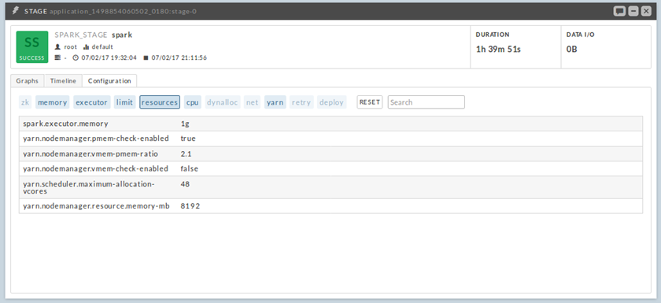
Execution Graph: Displays both the stage view and RDD view associated with this application.
Gantt Chart: A timeline of application stages
Query Plan: The logical plan of the SparkSQL query
Errors: Exceptions, errors, and warnings associated with this application
Logs: Logs for the driver and executors of this application, and a skyline of task attempts within the stage
Program: Source code of a general purpose Spark application, or the SQL query for a SparkSQL query
Task Attempts: Statistics about the task attempts that are executed as part of the current application
Containers: Utilization of slot containers over time
Vcores: Utilization of slot vcores over time
Memory: Utilization of slot memory over time
Resource: Graphs of JVM-level metrics at the executor and driver level. To show the graph for a specific metric, select that metric from the METRIC pull-down menu and click Get Data. For a list of resource-level metrics, see Resource Metrics.
These graphs are very useful for identifying critical resources that caused a performance degradation.
Hive Application Manager
The Hive Application Manager provides a detailed view into the behavior of Hive queries. You can use this view to resolve inefficiencies, bottlenecks and reasons for failure within applications. Typical users are Hadoop DBAs or application owners (engineers, BI team, analysts). The Hive Application Manager uses Unravel's Intelligence Engine to automatically identify certain inefficiencies with the application and to provide recommendations on how to improve efficiency.
| 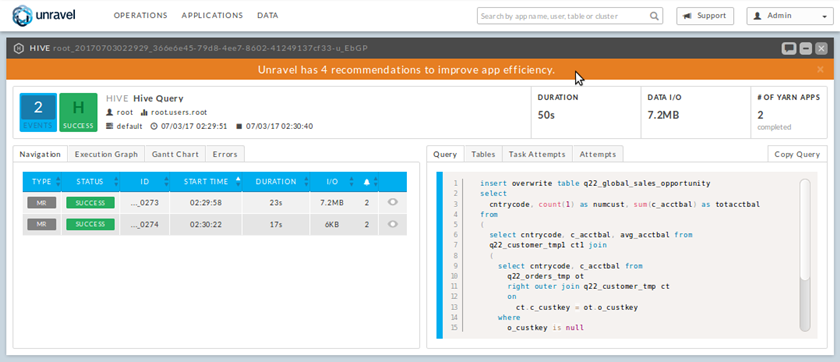 |
Key Performance Indicators (KPIs)
The key performance indicators (KPIs) at the top provide the most important information about the Hive query. The Hive Application Manager displays the following KPIs:
Events: The number of Unravel recommendations or insights for this query. To see details, click the Events icon as highlighted in the image below.
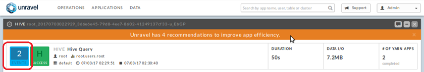 The performance and reliability of your Hive query depends on several factors such as quality of the code, types of joins used, configuration settings, data size, scheduler settings, contention with other applications, and so on. Therefore, it takes significant expertise and effort to get to the root cause of problems in a Hive query. Unravel Events are designed to save you time and effort by automatically providing insights into the application. These events capture reasons for failed and killed queries as well as provide recommendations to improve application performance.
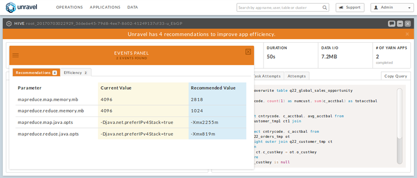 Duration: Total time taken by the application to complete execution
Data I/O: Total data read and written by the application
Number of YARN apps: The number of YARN apps that make up the Hive query
Sub-Tabs
The Hive Application Manager contains multiple sub-tabs, each of which is described below.
Navigation: Provides an easy way to understand the breakdown of the application and drill down into MapReduce jobs that make up the application. It includes information about MapReduce jobs such as duration, I/O, resources, events, job ID, and job status. When you select a MapReduce job, its details are shown in a pane below it. This detailed view includes the MapReduce timeline, MapReduce task attempts, and slot usage graph.
Execution Graph: Provides insights into the execution of the application. It shows detailed information about MapReduce stages and their relationship with one another. The execution view is split into two areas; the execution plan and the expanded info area.
This view helps identify bottlenecks and inefficiencies.Gantt Chart: Shows the relationship between MapReduce stages and high level information about each stage. The information shown in each stage box includes MapReduce job ID, base table name, time taken by the stage, percentage of total run time taken by the stage, and execution status.
Errors
Query: Shows detailed information about a stage when selected. The expanded info shows each of the map reduce functions, tables usage information, timings of each function and input paths used by the stage.
Task Attempts: Provides an easy way to understand efficiency and status of MapReduce task attempts by breaking down attempted tasks by successful, failed and killed.
Attempts
Slot Usage: Shows slot usage by Map and Reduce jobs over time.
MapReduce Application Manager
The MapReduce Application Manager provides a detailed view into the behavior of MapReduce applications. It is used by Hadoop DBAs or application owners (engineers, BI team, analysts) to resolve inefficiencies, bottlenecks and reasons for failure within applications. The MapReduce Application Manager uses the Unravel intelligence engine to automatically identify certain inefficiencies with the application and provides solutions on how to the fix the problem.
It contains similar sections to the Hive Application Manager and additionally shows the timeline view of MapReduce job execution, logs and configuration.
| 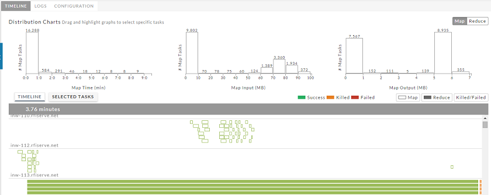 |
Sub-Tabs
The MapReduce Application Manager contains multiple sub-tabs, each of which is described below.
Timeline: Provides a detailed view into a MapReduce job execution. The Timeline shows execution of each MapReduce task on the machine that those tasks ran on and allows drill-down into each task to obtain further information. The timeline view comes with filters which can be used to display only map tasks, reduce tasks and killed/failed tasks. The histograms above the Timeline show the distribution of MapReduce tasks along time and data size. This histogram can also be used as a filter to zoom in on specific tasks.
Logs: Provides comprehensive information about each application including task and job logs. The logs section intelligently selects interesting tasks and presents its logs in an organized manner.
Configuration: Provides a complete list of configuration settings used during the application execution.
Finding Workflows
To find workflows, select SHOW | Workflow as highlighted in the image below.
Workflow Manager
The Workflow Manager provides a comprehensive view to understand workflows and their patterns of execution. It is used by Workflow (Pipelines) owners to identify anomalies, inefficiencies and bottlenecks in workflow instances. The Workflow Manager uses the Unravel intelligence engine to automatically identify inefficiencies with the workflow and provides solutions on how to the fix the problem. The Workflow Manager helps pipeline owners easily maintain SLAs.
The workflow header provides primary information about the workflow such as name, user name, queue that the workflow was submitted on, start time and tags that the workflow has been given.
| 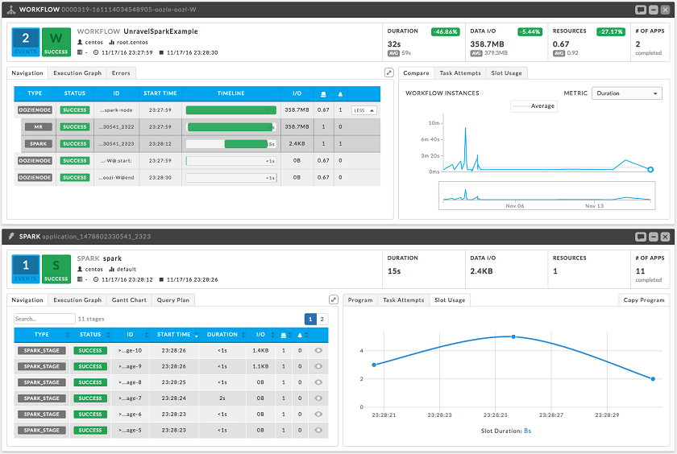 |
Key Performance Indicators (KPIs)
Events: The number of Unravel recommendations or insights for this workflow. To see details, click the Events icon.
Duration: Total time taken by the workflow to complete execution
Data I/O: Total data read and written by the workflow
Resources
Number of Apps: The number of apps that make up this workflow
Sub-Tabs
The Workflow Manager contains multiple sub-tabs, each of which is described below.
Navigation: Provides an easy way to understand the breakdown of the workflow and drill down into the Hive queries, Spark jobs, and MapReduce jobs that make up the application. It includes information about duration, I/O, resources, events, job IDs, and job status.
Gantt Chart: Shows the dependency between the various components and the time taken by each. It helps you to identify stuck or incomplete components which could be affecting the overall completion of the workflow.
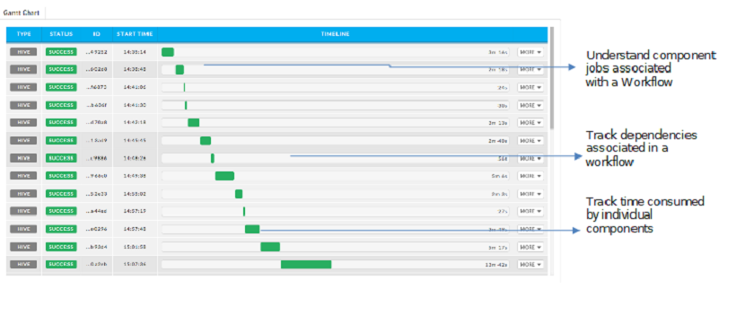DAG View: Clearly shows the dependencies between various components of the workflow and the status of components. To see details about status, hover over a status box to see the tool tips.

Compare: Provides a quick way to understand how well a workflow run compares to its other runs. Hovering your pointer over instances displays top KPIs such as duration, data I/O, resources, and the number of jobs in that instance. Clicking on a point on the chart loads that particular instance for inspection.
Events
Unravel Events are designed to save you time and effort by automatically providing recommendations and insights into the application. Recommendations are concrete suggestions at the level of configuration settings that can be applied at subsequent application runs to speed up the application performance, and to improve the resource efficiency. Insights, on the other hand, are identifying performance bottlenecks, data skew problems, capture reasons for failed, killed, and slow applications. In addition, insights provide useful guidelines that can be used to adjust the current configuration settings of the application. Unravel Events fall into the following categories: Application Speedup, Application Failure, Resource Efficiency, SLA Management.
Example: Hive Recommendations
 |
Example: Hive Insights
| 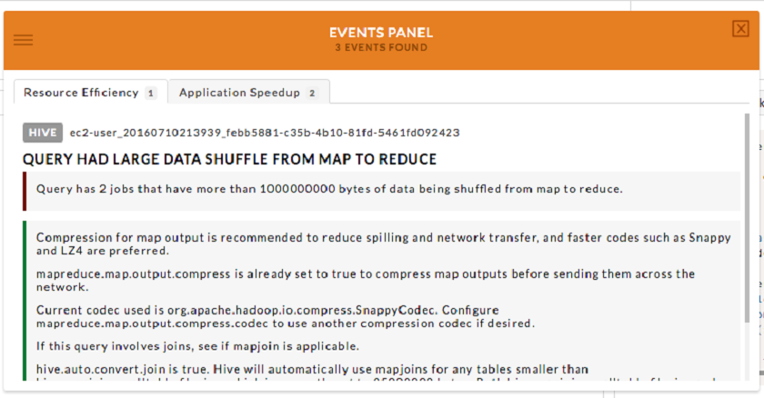 |
Example: Spark Recommendations
| 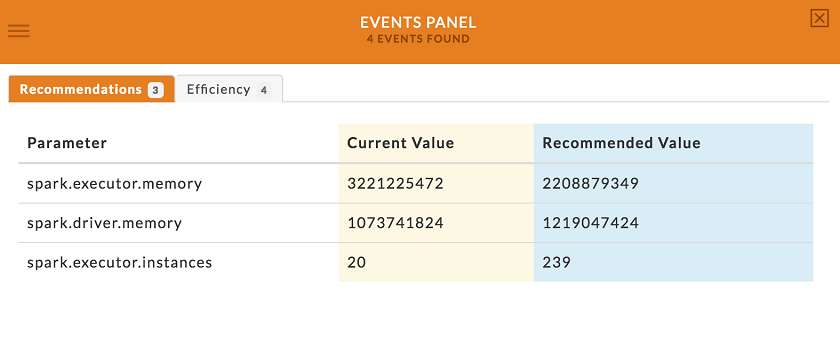 |
Example: Spark Insights
| 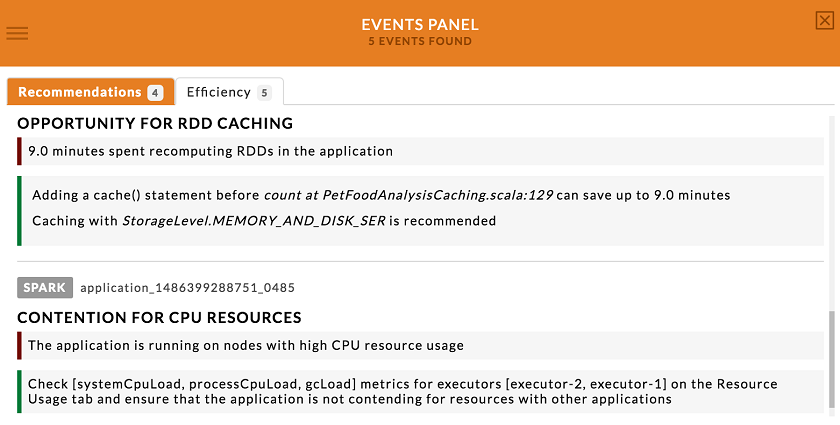 |
Example: Workflow Events
| 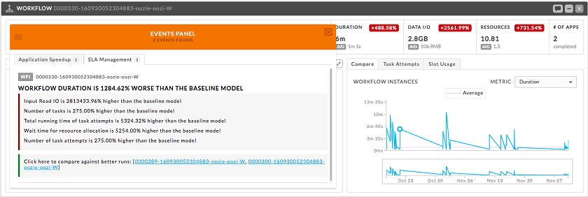 |
Error View
This new feature allows to quickly identify errors affecting your applications. Error views are available for MR, Hive and Oozie applications.
| 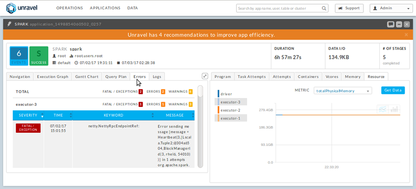 |
Errors for each application are categorized by Severity type and also include Keywords and details associated with each. Keywords extract important details from the errors messages/log data that can help developers/operators quickly root cause issue. Examples of keywords include Oozie errors code(s), Java run time error(s) etc.
Resource Metrics
The table below lists the resource metrics collected by Unravel. The availability of a particular metric is dependent on the underlying OS and JVM GC algorithm in use.
| Metric | Unit | Description |
| snapshotTs | TIMESTAMP (milliseconds) | The time the metric was read |
| startTs | TIMESTAMP (milliseconds) | The time when the collection process started |
| totalPhysicalMemory | BYTES | The total physical memory in the operating system |
| freePhysicalMemory | BYTES | The free physical memory in the operating system |
| committedVirtualMemory | BYTES | The committed virtual memory in the operating system |
| freeSwap | BYTES | The free swap size |
| availableMemory | BYTES | An estimate of memory available for launching new processes |
| vmRss | BYTES | The resident set size of the complete process tree |
| vmRssDir | BYTES | The resident set size of the process |
| totalSwap | BYTES | The total swap size |
| processCpuLoad | PERCENTS | Average process CPU load for the last minute (all cores) |
| systemCpuLoad | PERCENTS | Average system CPU load for the last minute (all cores) |
| fullGcCount | COUNT | Number of full GC runs |
| minorGcCount | COUNT | Number of minor GC runs |
| minorGcTime | DURATION (nanoseconds) | Accumulated time spent in minor GC |
| fullGcTime | DURATION (nanoseconds) | Accumulated time spent in full GC |
| gcEdenSurvivedAvg | BYTES | Average number of bytes moved from eden to survivor space. Might not be available for particular GC algorithms |
| gcSurvivorPromotedAvg | BYTES | Average number of bytes moved from survivor to old space. Might not be available for particular GC algorithms |
| gcYoungLiveAvg | BYTES | Average number of bytes alive in the young generation (eden + survivor spaces). Might not be available for particular GC algorithms |
| allocatedBytes | BYTES | Accumulated number of allocated bytes |
| edenPeakUsage | BYTES | Maximum memory usage in the eden space |
| survivorPeakUsage | BYTES | Maximum memory usage in the survivor space |
| oldPeakUsage | BYTES | Maximum memory usage in the old space |
| avgMinorInterval | DURATION (nanoseconds) | Average interval between two subsequent minor GCs. Might not be available for particular GC algorithms |
| gcLoad | PERCENTS | Percentage of CPU time spent in GC |
| blockingRatio | PERCENTS | Estimated percentage of CPU time spent in kernel blocking operations |
| avgFullGcInterval | DURATION (nanoseconds) | Average interval between two subsequent full GCs. Might not be available for particular GC algorithms |
| gcOldLiveAvg | BYTES | Average number of bytes alive in the old generation. Might not be available for particular GC algorithms |
| initHeap | BYTES | Initial heap size |
| maxHeap | BYTES | Maximum heap size |
| usedHeap | BYTES | Used heap size |
| committedHeap | BYTES | Committed heap size |
| initNonHeap | BYTES | Initial non-heap size |
| maxNonHeap | BYTES | Maximum non-heap size |
| usedNonHeap | BYTES | Used non-heap size |
| committedNonHeap | BYTES | Committed non-heap size |
| currentThreadCpuTime | DURATION (nanoseconds) | Current thread CPU time elapsed since the start of the measurement. Might not be available on some operating systems |
| currentThreadUserTime | DURATION (nanoseconds) | Current thread user time elapsed since the start of the measurement. Might not be available on some operating systems |